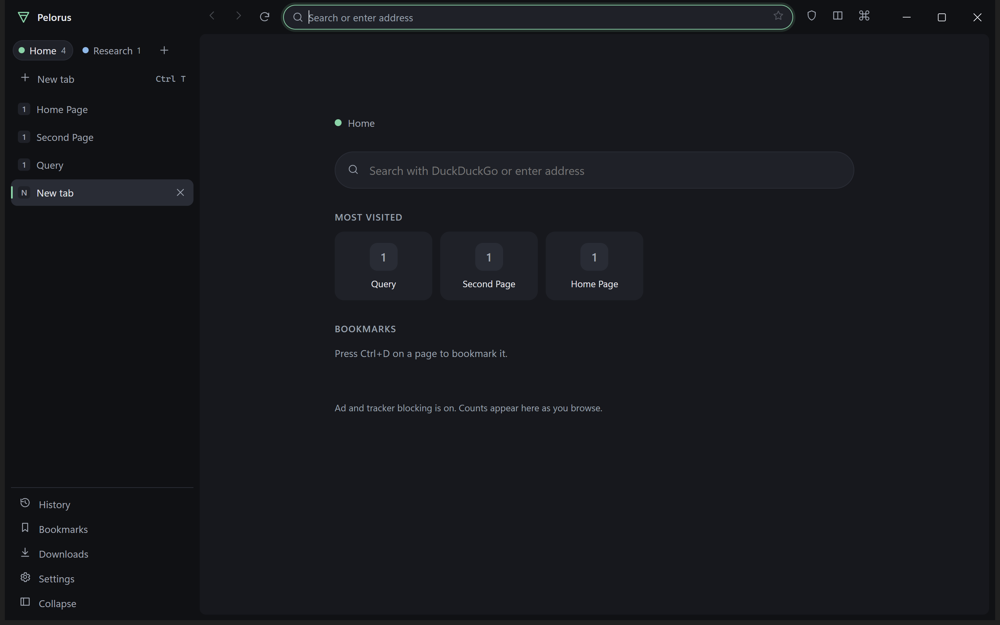
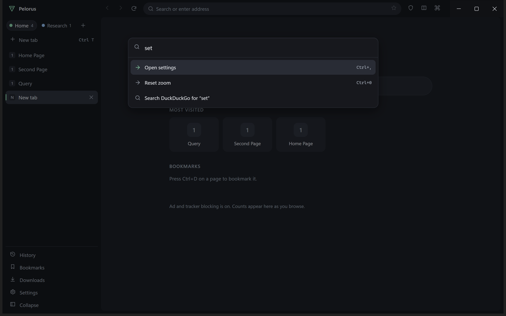

Workspaces that are really separate
Each workspace has its own cookies, cache, storage, history and permissions. Delete a workspace and its data goes with it. Private tabs live in memory only.
architecture →Pelorus is a privacy-first desktop browser built on Chromium. Every project gets its own workspace, trackers are blocked by default, and nothing about how you browse leaves your computer.
An honest pre-release: no extensions yet, not code-signed (Windows will warn), and only Windows has been tested by hand. What's missing →

A real screenshot of Pelorus 0.3.0 on Windows 11 (dark theme).
Each workspace has its own cookies, cache, storage, history and permissions. Delete a workspace and its data goes with it. Private tabs live in memory only.
architecture →Ctrl+K searches your tabs, history, bookmarks, workspaces and commands. Suggestions are computed on your computer; your keystrokes are never sent to a search provider.
Ad and tracker blocking, HTTPS-first with no way to click through a bad certificate, tracking-parameter stripping, Global Privacy Control, and deny-by-default permission prompts.
threat model →Inactive tabs can unload to free memory, and a restart loads only the tab you were looking at. On our two-run benchmark memory landed near Chrome's: a result with caveats, written up in full.
the numbers →File names are sanitised, risky types are flagged (including disguised .pdf.exe), and the browser never launches an executable you downloaded.
The only things Pelorus does by itself: fetch ad-blocker lists, and — only if you switch it on — secure-DNS lookups. The update check runs only when you press its button.
privacy policy →
Pelorus is not code-signed yet, so we give you better ways to check what you downloaded than a publisher name.
Every release is built by GitHub Actions from a tag, with a checksum file, an SBOM and a build-provenance attestation.
gh attestation verify Pelorus-Setup-0.3.0.exe --repo shipking-ai/pelorus Get-FileHash .\Pelorus-Setup-0.3.0.exe -Algorithm SHA256
Security issues go through GitHub's private vulnerability reporting, and the project says plainly what hasn't been reviewed: there has been no independent security audit yet.
report privately →The full status, open issues and roadmap live in the handoff document in the repository.